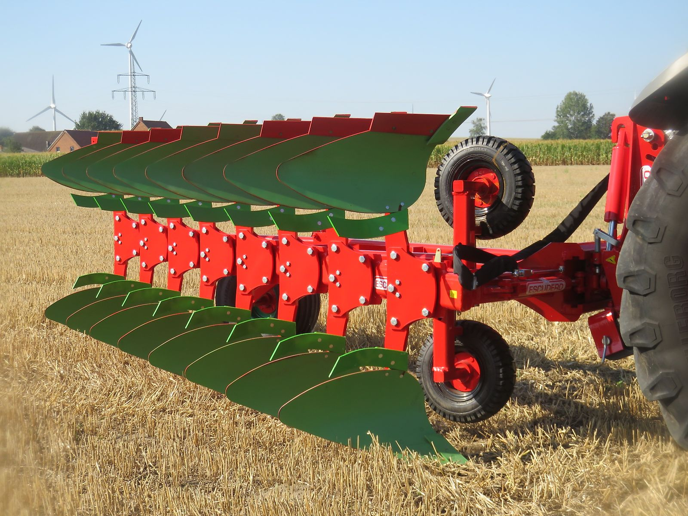

Über uns
agroXX techniCCenter
Landtechnik für die Bodenbearbeitung – persönlich, direkt und ab Lager.
Wer wir sind
Das agroXX techniCCenter ist die Anlaufstelle für Landwirte, die robuste Maschinen für die Bodenbearbeitung suchen. Unser Schwerpunkt sind Mulchgrubber, Kurzscheibeneggen, Cambridgewalzen, Großfederzinkeneggen und Tiefenlockerer.
Ständig stehen 50 bis 80 verschiedene Maschinen ab Lager sofort für Sie bereit. Dazu kommen Pflüge, Kreiseleggen, Muldenkipper, Schlepperreifen und Verschleißteile.
Inhaber und Ansprechpartner ist Thomas Schalkamp.
Hier kann Thomas in eigenen Worten die Firmengeschichte erzählen: Gründung, Werdegang, was ihm wichtig ist.
von Thomas Schalkamp
oder dem Betriebsgelände
Das bieten wir Ihnen
Beratung
Passt die Maschine zu Ihrem Schlepper (der TRIPLE-X ist für 140 bis 300 PS ausgelegt) und Ihren Flächen? Wir beraten Sie ehrlich und direkt.
Ausstellung
Sehen Sie sich die Maschinen vor Ort an. Vorführgeräte und einzelne Maschinen gibt es auch zu Sonderkonditionen.
Inzahlungnahme
Sie möchten Ihre alte Maschine abgeben? Eine Inzahlungnahme ist nach Absprache möglich.
Lieferung
Lieferung ist möglich, günstige Transportmöglichkeiten sind vorhanden. Sprechen Sie uns einfach an.
Marken im Programm
Neben den agroXX-Maschinen führen wir Maschinen und Teile weiterer Hersteller.
- agroXX
- Quivogne
- Escudero
- Pronar
- Michelin
- Alliance
- Ascenso
Wir sprechen Ihre Sprache
Auch Kunden aus dem Ausland sind bei uns richtig. Thomas Schalkamp spricht:
- Deutsch
- Englisch
- Französisch
- Spanisch
- Italienisch
- Portugiesisch
- Polnisch
- Rumänisch
- Bulgarisch
- Ungarisch
- Japanisch
Sprechen Sie mit uns.
Welche Maschine passt zu Ihrem Schlepper und Ihren Flächen? Thomas Schalkamp berät Sie gern – am Telefon, per WhatsApp oder direkt bei uns auf dem Hof in Ennigerloh.